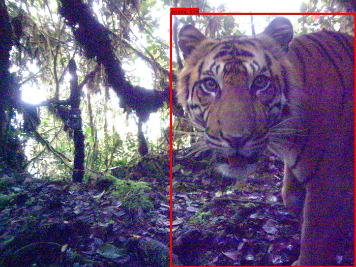

I'm currently a Data Scientist on a product team at REWE Group
where we tackle food waste using ML.
Previously I've been a Data Scientist at UNICEF Germany,
helping my colleagues with everything data-related from visualizations to predictions
and pursuing my own data-driven ideas to support UNICEF's mission on helping children all around the world.
I've also been part of the Data Taskforce and the Green Team.
Climate change, conservation, global health, food security and education are some of the topics I care about.
Using data and machine learning in sustainable and responsible ways to bring forward these topics is what I'm excited about.
I did my MSc in Business Administration, Media and Technology Management at the University of Cologne in Germany,
focusing on Data Science, Technology Management and Digital Transformation.
I was a member of Enactus and spent a term abroad at the Indian Institute of Management Ahmedabad in India.
I worked at the digital consultancy FELD M in Munich
as an intern and working student (Digital Analytics)
and at the tech start-up Metalshub in Düsseldorf
as a working student (Entrepreneurship and Marketing).
I did my BSc in Economics and Business Administration at the University of Tübingen in Germany.
During my bachelor's I was a member of our faculty's student council and Market Team.
I spent a term abroad at Lomonosov Moscow State University in Russia and another one at Oregon State University in the U. S.
I worked at the tech start-up Kreatize in Berlin
as an intern and working student (Business Development and Product Management).
Besides, I enjoy learning about astronomy, philosophy and vegan/regional/seasonal cooking.
I'm a member of the public observatory in Cologne.
On occasion I like to participate in hackathons with a positive societal impact.
Soft skills: Teamwork, communication & presentation, data ethics
Projects
Camera traps
TeraiNet: A species classification model focused on the Terai region in Nepal to support Bengal tiger conservation
This project is about building a species classification model for the Terai region in Nepal,
using ML, open data, open source tools and free compute resources.
The goal is to provide an automated solution for ecologists and NGOs working on Bengal tiger conservation
to reduce the manual labor involved in analyzing large volumes of camera trap images.
The model is made openly available through AddaxAI.

Credentials: LILA BC, MegaDetector, own illustration.
Classifying land cover in KAZA using remote sensing and ML (with WWF Germany's Space+Science Team)
This project constitutes a set of scripts and notebooks for land cover classification in the Kavango-Zambezi
Transfrontier Conservation Area (KAZA), using Sentinel-2 and ML.
The pipeline trains and optimizes a model locally and performs inference in Google Earth Engine, making the process flexible and efficient.
While focused on KAZA, it can be adapted for other regions with suitable labeled data for training.
Mapping cropland in KAZA using remote sensing and ML (with WWF Germany's Space+Science Team)
This project aims to monitor agricultural land use in the Kavango-Zambezi Transfrontier Conservation Area (KAZA).
The focus is on detecting farm plot locations and tracking their changes over time using Sentinel-2 and ML.
The project offers tools for data processing, model training and visualizations, enabling the detailed mapping of croplands.
Detecting stationarity in animal movement data using R Shiny (EMAC23 Coding Challenge for MoveApps by Max Planck Institute of Animal Behavior)
The Stationarity Dashboard is an App on MoveApps,
designed to track animal behavior over time and identify stationary individuals or anomalies in movement patterns.
It provides users with a range of features (summary table, tracker map and distance plot)
and options (individual and date range filters and inputs for stationarity detection) to conveniently analyze their movement data.
Analyzing speed in animal movement data using R Shiny
The Speed Dashboard is an App on MoveApps, showing speed-related metrics for individual animals,
based on GPS tracking data. It allows users to explore these metrics
and set variable thresholds (e.g. for number of observations, distance, and time above threshold)
in an interactive way.
Merdian-Tarko, A.V. (2025). TeraiNet: An open-source blueprint for the fast and flexible development of local species classification models. 5th International Workshop on Camera Traps, AI, and Ecology. PDF
Co-author of Kölzsch, A., et al. (2025). Citizen scientists for MoveApps: Innovations and insights from volunteer coders in wildlife conservation. Methods in Ecology and Evolution. DOI
Guest contribution on "Data for Good Causes - An Overview" in Greiner, R., Berger, D., & Böck, M. (2022). Analytics und Artificial Intelligence. Springer Books. DOI
News
2025
: Speaker on "AI x Biodiversity: How to put Data for Good into practice" at TDWI roundtable Machine Learning and Artificial Intelligence
: Environ-Mate is featured in the data.europa.eu's Use Case Observatory research project
2021
September to November 2021: Machine Learning Engineer in Omdena’s Dryad Challenge on “Building AI Model to Detect Forest Wood Fire through Sensor Data Analysis”
2020
: Winning team in remote HIDA Datathon for grand challenges on climate change
: Webinar on Environ-Mate at EU Lunchtime Conference